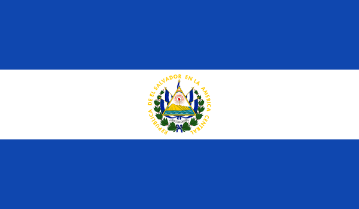

Salvadoreño. 
Introduccion.
Mi nombre es Diego Edgardo Vega Herrera. Naci en El Salvador el dia 29 de septiembre de 1997, a los pocos meses de nacido se me diagnostico una enfermedad del corazon por lo que se me realizo una operacion.
Padres.Mis padres son Silvia Elizabeth Herrera Perdomo y Armando Edgardo Vega Escobar, quimica farmaceutica y medico forense respectivamente.
Hermanos.Tengo una hermana, su nombre es Silvia Alejandra Vega Herrera.
Estudios:
Termine mis estudios en el colegio graduandome de bachiller. En el año 2016 comence mis estudios en la Universidad Centroamericana: "Jose Simeon Cañas".
Actualmente en el año 2018 sigo estudiando Ingenieria Informatica
De igual forma, disfruto cursos, tutoriales o alguna charla en internet sobre tema de mi carrera para conocer aunque sea un poco sobre terminos aun no tocados en las asignaturas cursadas pero que poco a poco voy viendo aun mas amenudo en algunos temas.
Algunos de los sitios que he utilizado para estudiar son los siguientes:Años despues, mientras crecia:
Mas adelante, siendo un niño, no se muy bien como pero le llame la atencion a mi medico por algo que yo notaba extraño, resulta que yo habia notado problemas de audicion en uno de mis oidos (problema que aun esta presente) luego de unas pequeñas pruebas (mas que examenes, pruebas) se informo de que a falta de una parte del oido no podia escuchar nada por el, lo cual reamente nunca ha significado problema mas que tener que pedir muchas veces que me se me repita algo al hablar.
Durante los años de colegio me comenzo a llamar la atencion lo relacionado a lo estetico de las postproducciones de video o edicion de fotografia, ilustracion, por lo que el diseño o arte es una de las cosas que, aunque no practique, disfruto de ver o conocer.